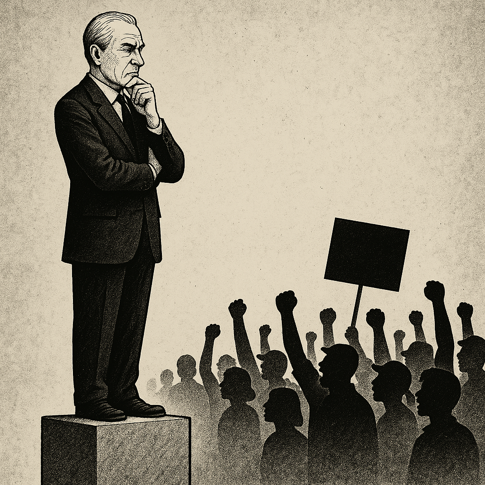

"O Desprezo de Cima e o Clamor de Baixo", a propósito de artigo publicado no "O Expresso", por Miguel Sousa Tavares.
Vivemos num país onde pensar já é revolta, e agora — pelos vistos — votar diferente é traição à democracia. Miguel Sousa Tavares, um dos nomes mais celebrados da nossa intelligentsia mediática, declarou que os eleitores do Chega “não são recuperáveis para o espaço democrático”. Está dito. Com pompa e convicção. Como se a democracia fosse um clube privado com dress code.
Mas este tipo de frase não ilumina. Cega. E revela a cegueira de quem não quer entender as razões de um voto, mas apenas condená-lo moralmente.
Quando figuras públicas olham para centenas de milhares de portugueses e os declaram “irrecuperáveis”, o que estão a fazer é renunciar à política, à pedagogia e à empatia. A política é, acima de tudo, arte de escuta, negociação e entendimento — não é tribunal de moral.
O voto no Chega pode ser perigoso, sim. Mas mais perigoso ainda é o desprezo elitista que recusa olhar para o que está por trás desse voto: desespero, abandono, frustração, raiva acumulada por décadas de promessas traídas. Estes eleitores não nasceram assim. Foram deixados para trás por um sistema que os tratou como números, estatísticas ou incómodos silenciosos.
Se queremos combater o populismo, não é com arrogância que o faremos — é com justiça social, educação crítica e reformas estruturais profundas. Demonizar o povo é o primeiro passo para o fim da democracia real. Porque a democracia não é um luxo para os bem-pensantes: é uma casa comum para todos, inclusive para os desiludidos, os revoltados, os que gritam porque já não sabem como falar.
Se quisermos salvar a democracia, talvez tenhamos de começar por salvar o respeito. Porque quando o povo grita, o problema não está no grito — está no silêncio que o antecedeu.
Artigo de Francisco Gonçalves
Créditos para IA, chatGPT e DeepSeek (c)